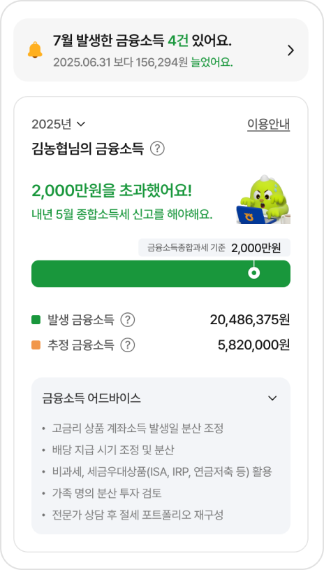
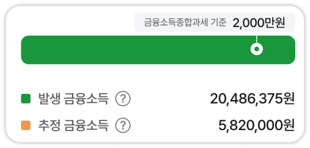
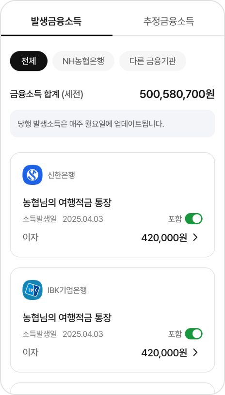
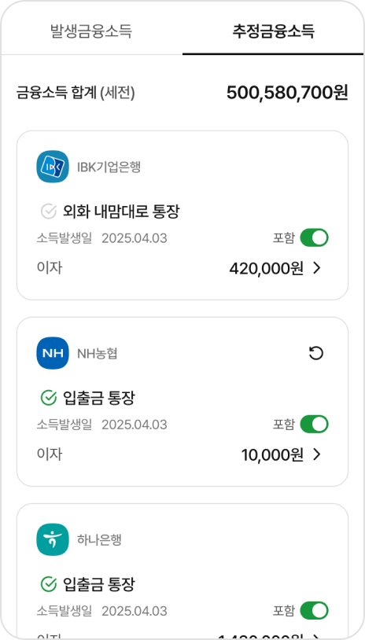
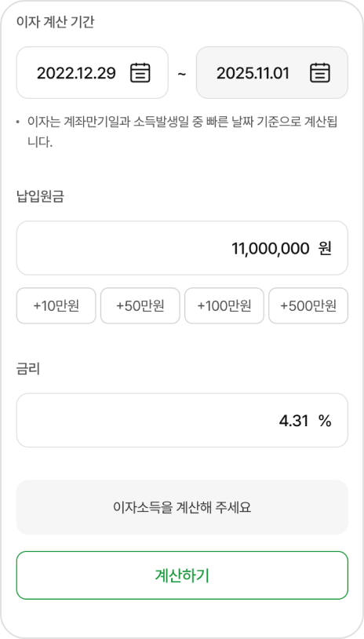

="
>
금융소득 모니터링 안내
예·적금, 펀드, 주식 등 은행 및 증권사의 금융상품 가입을 통해 받은 이자 및 배당소득을 분석하여 안내 해 주는 서비스입니다. 금융소득 발생 구간별 상태 메시지 및 절세 어드바이스를 제공하며, 특히 금융소득 발생내역을 실시간 모니터링하여 안전하게 금융소득을 관리할 수 있도록 도와줍니다.
- 이자, 배당과 같은 금융소득은 2,000만원 초과시 금융소득종합과세 대상으로, 다른 소득(근로, 사업, 연금 및 기타 등)과 합산과세가 적용됩니다.
- 종합소득세
| 과제표준 | 세율 | 누진공제액 |
|---|---|---|
| 1,400만원 이하 | 6% | - |
| 1,400만원 ~ 5,000만원 | 15% | 126만원 |
| 1,500만원 ~ 8,800만원 | 24% | 576만원 |
| 8,800만원 ~ 1.5억원 | 35% | 1,544만원 |
| 1.5억원 ~ 3억원 | 38% | 1,944만원 |
| 3억원 ~ 5억원 | 40% | 2,594만원 |
| 5억원 ~ 10억원 | 42% | 3,594만원 |
| 10억원 초과 | 45% | 6,594만원 |
금융자산을 분석해 드려요


발생금융소득
이용방법을 알려드려요

추정금융소득
이용방법을 알려드려요

금융소득 계산기
이용방법을 알려드려요
